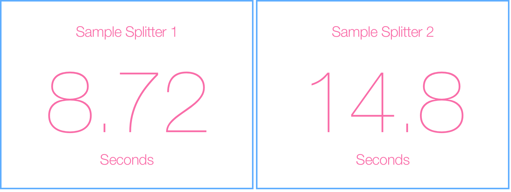

Bill Splitter
A KLM based Usability Study
My Role
UX Engineer
UI Designer
Practices
Keystroke Level Modeling
Fitts's Law
Usability Evaluation
Goal: "Perception Based UI Efficiency Evaluation"
Background: NUS CS4249 "Human-Computer Interaction" Class Project
The project focuses on evaluating UI efficiencies from a human perception point of view. We practised the use of Keystroke-Level Modelling to quantify human behaviors. We applied Fitts's Law in calculating the overall time for each of the user performed tasks. Finally, based on the analysis results, we proposed a new design that shorten the completion to 1/3 of its original.
Problem: Why they are badly designed?
Two bill splitting apps are presented, their intention of the original design is to facilitate bill splitting process. There are two sub-tasks to achieve in the process:
1. Add the participants names into the application
2. Name your expense or event meal
However, the user experience is not as good as expected, and this project aims to find out "why".
Evaluation Metrices
KLM & Fitts's Law
In the evaluation of
KLM, we delineated the steps and their rationale (in a numbered list) of how users interact with both interface to accomplish the stated task.
Next, we calculated the time of KLM analysis in accomplishing the stated task. We used Fitts Law to calculate the actual cursor movement time and include the actual numbers of all measured A and W (of
Fitts Law).
Usability Analysis
Efficiency Comparison
Time for completing stated tasks. (Results generated from CogTool)

Efficiency Analysis
The main drawbacks occurs at long moving distance in Fitts’s Law, thus decease the time when users are navigating with their mouse. The system requires too much mental preparations for each sub-steps in task completion.
Refinement
Iteration 1 Refined points
-
Less Navigation Distance
-
Larger Targetting Clicking Space
-
Less Mental Preparation
-
Reduce Number of Sub-Tasks
Iteration 2 Refined Points
-
Further Reduce Mouse Moving Distance
-
No Pop-Ups
-
Support Ratio Split
-
Coloring